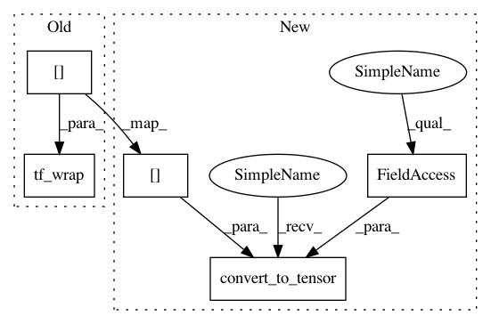

d5aba73e0c518742ad38a2482f7a3a567b0e406a,research/a3c_blogpost/a3c_cartpole.py,MasterAgent,play,#MasterAgent#,211
Before Change
try:
while not done:
env.render(mode="rgb_array")
policy, value = model(tf_wrap(state[None, :]))
policy = tf.nn.softmax(policy)
action = np.argmax(policy)
state, reward, done, _ = env.step(action)
After Change
try:
while not done:
env.render(mode="rgb_array")
policy, value = model(tf.convert_to_tensor(state[None, :], dtype=tf.float32))
policy = tf.nn.softmax(policy)
action = np.argmax(policy)
state, reward, done, _ = env.step(action)
In pattern: SUPERPATTERN
Frequency: 3
Non-data size: 5
Instances
Project Name: tensorflow/models
Commit Name: d5aba73e0c518742ad38a2482f7a3a567b0e406a
Time: 2018-07-20
Author: ray.yuan0@gmail.com
File Name: research/a3c_blogpost/a3c_cartpole.py
Class Name: MasterAgent
Method Name: play
Project Name: tensorflow/models
Commit Name: d5aba73e0c518742ad38a2482f7a3a567b0e406a
Time: 2018-07-20
Author: ray.yuan0@gmail.com
File Name: research/a3c_blogpost/a3c_cartpole.py
Class Name: Worker
Method Name: compute_loss
Project Name: tensorflow/models
Commit Name: d5aba73e0c518742ad38a2482f7a3a567b0e406a
Time: 2018-07-20
Author: ray.yuan0@gmail.com
File Name: research/a3c_blogpost/a3c_cartpole.py
Class Name: Worker
Method Name: run